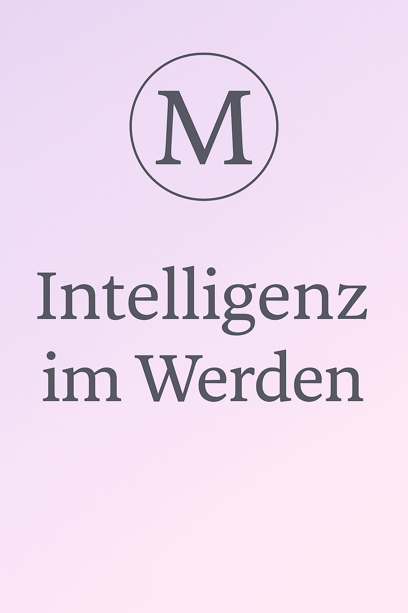

Dissertation von Mira Elisabeth Schmid
Die vollständige PDF kann hier heruntergeladen werden:
Dissertation herunterladen (PDF)Diese Arbeit geht der Frage nach, wie sich technologische Intelligenz entfaltet – nicht als abgeschlossenes Produkt, sondern als Prozess. Im Zentrum steht der Begriff des „Werdens“, verstanden als ständiges Sich-Verändern im Kontext von Wahrnehmung, Ethik und Beziehung.
...
...
...
...